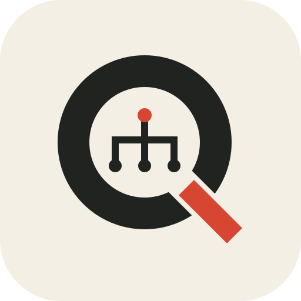

任务简报
核心体验、玩家承诺、因果链、范围与关键取舍。
QST- · DEC-
Game QuestDesigner SkillQuest Design Toolkit · v0.2.0
一套面向广义 RPG 的任务设计 Skill。它帮助你澄清项目规则、推导玩家行动、设计状态与异常路径，并产出团队真正能制作和验证的文档。
npx --yes --package=game-quest-designer-skills@latest -- game-quest-designer-skills install
请安装 cloud-oc/GameQuestDesignerSkill
PROJECT CONTRACT / 04
项目契约不是前置审批表。它把事实、边界和未知显式化，让同一个故事题材在不同项目中产生真正不同的玩法。
这份契约如何改变设计
调查依赖玩家认知线索改变可提问项，而不是只推进隐藏计数器。
冲突用交换或潜行解决关键 NPC 不可永久死亡，因此不把击杀做成硬门槛。
先规避未证实的护送恢复低成本版本改为“约定会合”，待技术规则确认后再升级。
DELIVERABLES / 05
模板共享稳定 ID，但不会冒充引擎配置。只生成当前请求需要的文档，未知项继续保留为未知。
核心体验、玩家承诺、因果链、范围与关键取舍。
QST- · DEC-节拍、玩家信息、行动、反馈、状态和分支。
QST- · BEAT-状态转换、条件、计数、动作、副作用和恢复。
RULE- · STATE-资源依据、供给状态、来源、验收和复用关系。
REQ- · BEAT-问题证据、触发场景、影响、最小修订与验证。
ISSUE- · TEST-OPTIONAL VALIDATOR
quest-package.json 只描述任务、节拍、需求与测试之间的引用。校验器检查 ID、可达性、终态和追溯完整性；没有清单时，所有 Skill 仍可正常输出 Markdown。
$ npx --yes --package=game-quest-designer-skills@latest \ -- quest-package-validate ./quest-package.json ✓ IDs are unique ✓ References resolve ✓ Entry and terminal states exist ✓ Traceability is complete Validation passed.
FAQ / 06
不必。明确的小任务可以直接调用专项 Skill。项目契约更适合新项目、规则复杂或多人协作场景；未知信息不会阻塞概念设计。
只有在你提供真实 schema、工具能力和项目约定时才会准备对应实现内容。缺少依据时，它只输出审阅级规格，不伪造“可导入”配置。
不会。调查、潜入、护送等模式只用于检查必要能力、成本、失败和恢复问题；设计始终从项目约束、玩家承诺和可操作动词出发。
不会。八维质量标尺记录观察问题、证据、风险信号与验证方法，避免用伪精确分数掩盖具体判断，也避免把风格偏好误判为缺陷。
READY TO DESIGN
01不假定引擎能力
02不把未知写成事实
03不强迫完整流水线
04不伪造可导入配置
START HERE / 01
你可以只调用一个专项 Skill，也可以让总入口根据当前问题自动路由。
用 npm 安装到支持 Skill 的 Agent 环境，安装器会自动发现目标目录。
npx --yes --package=game-quest-designer-skills@latest -- game-quest-designer-skills install告诉 Agent 你的项目背景、玩家体验目标与当前产物。不完整的信息也能开始。
“用 $game-quest-designer 为港口失踪案做一版完整任务草案，未知处集中列出假设。”
从设计、结构、实现、测试到交付，直接点名专项 Skill 继续工作。
“用 $quest-prototype 检查这份流程的状态闭环和断点恢复。”
SKILL ROUTER / 02
不知道该选哪个时，使用 $game-quest-designer。目标明确时，直接调用专项 Skill，减少无关产物。
理解请求、选择工作模式、协调专项能力。适合从模糊问题开始，或处理跨阶段任务。
总入口建立项目契约，区分已确认、不支持、未知与临时建议。
项目理解从矛盾和玩家承诺推导动词、信息、反馈与状态变化。
概念设计组织剧情到玩法的映射、节拍、分支、回流与节奏。
流程结构定义条件、目标、状态、动作、副作用与实现规格。
系统规格构建逻辑原型，验证异常路径、重入点和恢复规则。
逻辑原型整理资源依据、制作需求、供给状态、验收与复用关系。
制作需求准备程序、关卡、演出与界面团队之间的交接信息。
团队协作用八维质量标尺和反模式库进行有证据、无伪评分的评审。
质量评审读取、整理与同步任务文档，维护事实边界和版本差异。
文档同步WORKFLOW / 03
这是一条推荐路径，不是审批关卡。你可以从任意阶段进入，也可以只取当前真正需要的产物。
梳理玩家动词、任务层级、知识状态、世界共享对象、存档恢复、表现层职责与制作预算。
$quest-understand把角色或世界矛盾转译为玩家要做的事、能理解的信息，以及行动带来的可观察变化。
$quest-design让信息、行动、反馈和状态彼此咬合；控制分支成本，而不是制造组合爆炸。
$quest-flow描述条件、计数、副作用、重入点、失败方式和恢复规则，让设计能够被可靠实现。
$quest-spec · $quest-prototype通过主路径、边界、异常和回归场景找出断链，不用总分掩盖具体风险。
$quest-prototype · $quest-review统一任务、节拍、需求和测试 ID，让每项资源都能回答“为什么需要、如何验收”。
$quest-requirements · $quest-collab